FoodLuck MEO 操作説明書 19
Googleについて
Googleビジネスプロフィールの基本、オーナー権限、ステータス、クチコミ未反映、重複・停止時の対応を現場向けに整理した実務マニュアル
| この資料の目的 この資料はFAQ「Googleについて」カテゴリの64記事をもとに、飲食店の現場で判断に迷いやすいGoogle側の仕様と対応手順を整理したものです。FoodLuck MEOの操作だけで完結しない項目も含むため、Google管理画面での操作が必要な場合は、影響範囲を確認してから進めます。 |
|---|
| 必ず守ること オーナー権限、管理者追加・削除、ビジネスプロフィール削除、再審査請求、重複対応、リスティング停止の復旧申請は、店舗の表示や管理権限に大きく影響します。現場判断で実行せず、基本的にはFoodLuck側へ相談してください。 |
|---|
1. Googleビジネスプロフィールの基本
Googleビジネスプロフィールは、Google検索やGoogleマップでお店を探しているお客様に、店舗名、住所、電話番号、営業時間、写真、クチコミ、投稿などを表示するための公式情報です。飲食店にとっては、来店前のお客様が最初に見る看板のような役割を持ちます。
| 用語 | 意味 | 飲食店での見方 |
|---|---|---|
| Googleビジネスプロフィール | Google上に表示される店舗情報の管理元 | 営業時間、写真、クチコミ、投稿、予約導線を整える場所 |
| ナレッジパネル | 店名検索などで右側や上部にまとまって出る店舗情報 | お客様が来店前に確認する基本情報 |
| ローカルパック | 地域名や業種で検索した時に地図と一緒に出る店舗一覧 | 近くで探しているお客様に見つけてもらう入口 |
| オーナー確認 | その店舗を管理する権限をGoogleに認めてもらう手続き | 情報編集や問い合わせに必要 |
| 店舗ごとに作成する理由 複数店舗がある場合は、1つにまとめず店舗ごとにGoogleビジネスプロフィールを作成します。Googleは検索しているお客様の現在地に合わせて店舗を表示するため、住所・電話番号・営業時間が店舗ごとに独立していることが重要です。 |
|---|
2. 店舗情報・導線を整える
FoodLuck MEOでは、Googleに表示される店舗情報の多くを管理できます。Google側の仕様として、カテゴリや予約サービスによって表示できるボタンや項目が変わるため、「設定したのに表示されない」場合でも、必ずしも操作ミスとは限りません。
2-1. お客様に見られる主な情報
- 店舗名、住所、電話番号、営業時間、定休日、特別営業時間
- Webサイト、予約サイト、メニュー、SNSリンク
- 写真、動画、投稿、クチコミ、平均評価
- 属性、サービス、支払い方法、設備などの補足情報
2-2. SNSリンク・公式サイト・予約リンク
- SNSリンクを設定すると、Google検索やマップからInstagram、Facebook、Xなどへ移動しやすくなります。
- 公式サイトや予約サイトへの導線は、来店前のお客様の行動に直結します。リンク切れや古い予約ページがないか定期的に確認します。
- 青い「オンラインで予約」ボタンは、Googleと公式連携している予約サービスや対象カテゴリでないと表示されない場合があります。
- 予約URLを登録しても、Googleの仕様によりテキストリンク表示になることがあります。
参考画面: Google上の予約・導線ボタン
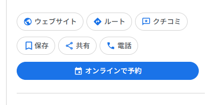
- 予約、ウェブサイト、ルート、クチコミなど、お客様の行動ボタンがまとまって表示されます。
| カテゴリの影響 予約ボタンや一部機能は、Googleビジネスプロフィールのメインカテゴリによって表示可否が変わります。飲食店でもカテゴリが実態とずれていると、使える機能や見え方が変わることがあります。 |
|---|
2-3. 写真掲載の考え方
Googleビジネスプロフィールには、管理画面から投稿した写真を最大2,500枚まで掲載できます。ユーザー投稿写真はこの枚数に含まれません。料理、外観、店内、メニュー、スタッフの雰囲気が分かる写真を継続的に追加することで、来店前の不安を減らせます。
参考画面: Googleビジネスプロフィールで表示される店舗情報
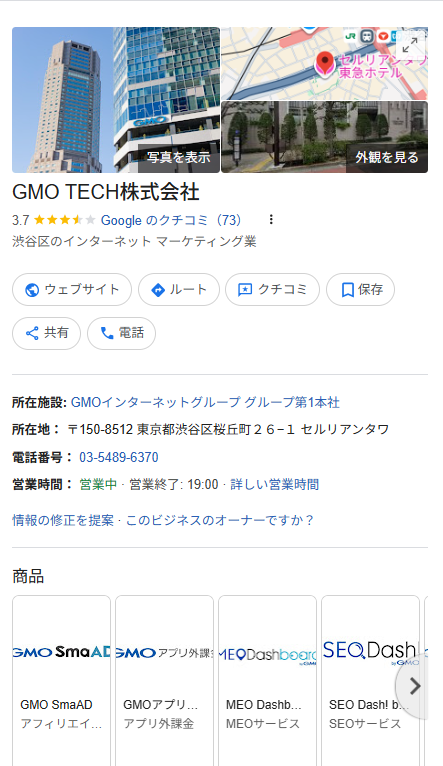
- 写真や基本情報は、検索したお客様が最初に見る判断材料です。
3. クチコミが反映されない・消えた時の対応
GoogleのクチコミはAIによる自動審査が行われます。問題のないクチコミでも、スパムや不自然な投稿と誤認されて非表示になることがあります。現場では、お客様に何度も書き直してもらう前に、まず原因を切り分けます。
3-1. クチコミが消えやすくなる主なきっかけ
- 店舗のWi-Fiにつないだ状態で、その場でクチコミを書いてもらう。
- 短時間に複数のお客様から同じような文面のクチコミが入る。
- スタッフ個人名の記載を強くお願いするなど、不自然な誘導に見える依頼をする。
- 星5だけをお願いする、特典と引き換えに投稿を促すなど、Googleポリシー上疑われやすい依頼をする。
- 反映されないからと、お客様に文章修正や再投稿を何度もお願いする。
3-2. 店舗でできる予防策
□ 店内Wi-Fiではなく、お客様自身のスマホ回線で投稿してもらう。
□ 会計直後に全員へ一斉依頼せず、来店後のLINEやメールで自然に依頼する。
□ 評価点や文面を指定せず、実際に感じたことを書いてもらう。
□ 反映されない場合はすぐ再投稿を依頼せず、数週間様子を見る。
□ 表示されなくなったクチコミのスクリーンショットがある場合は保管する。
| 再審査について Googleのクチコミ管理ツールから、非表示になっているクチコミを1回限り再審査依頼できる場合があります。ただし、申請すれば必ず復旧するものではありません。FoodLuck側に状況を共有してから進めるのが安全です。 |
|---|
4. オーナー確認と権限管理
Googleビジネスプロフィールを安全に管理するには、誰がオーナー権限を持っているかを把握しておくことが大切です。オーナー権限は店舗情報の編集だけでなく、管理者追加・削除、権限譲渡、プロフィール削除にも関わります。
| 権限 | できること | 現場での扱い |
|---|---|---|
| メインのオーナー | 所有権の中心。オーナー変更や削除など重要操作ができる | 会社代表・本部・FoodLuck側など責任者で管理 |
| オーナー | 管理者追加、削除、重要設定の変更ができる | 不用意に増やさない |
| 管理者 | 基本情報編集、写真、投稿、クチコミ返信など多くの運用ができる | 店舗担当者に付与する場合がある |
参考画面: Googleアプリからビジネスプロフィールを開く
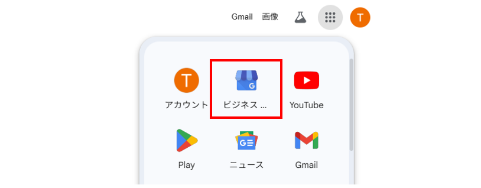
- Googleアカウントにログインし、アプリメニューからビジネスプロフィール関連画面へ進みます。
参考画面: 管理画面でステータスを確認する
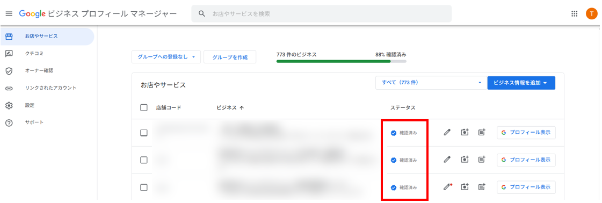
- 店舗一覧や管理画面で、確認済み・重複・停止などの状態を確認します。
4-1. オーナー確認の主な方法
- ハガキ: 登録住所へ確認コードが届く。通常14日から数週間かかる場合があります。
- 電話・SMS: 登録電話番号でコードを受け取る。自動音声やIVRでは受け取れない場合があります。
- メール: Googleが認めたメール宛に確認コードや案内が届く場合があります。
- 動画・録画: 店舗外観、看板、内観、管理権限が分かるものを撮影して確認する方法です。
- 一括確認: 10店舗以上など、条件を満たす場合に一括確認が使えることがあります。
| ハガキ確認の注意 ハガキが届く前に店舗名、住所、カテゴリを変更したり、確認コードを再発行したりすると、前のコードが無効になることがあります。確認コードは重要情報なので、第三者へ共有しないでください。 |
|---|
参考画面: 動画でオーナー確認を進める流れ
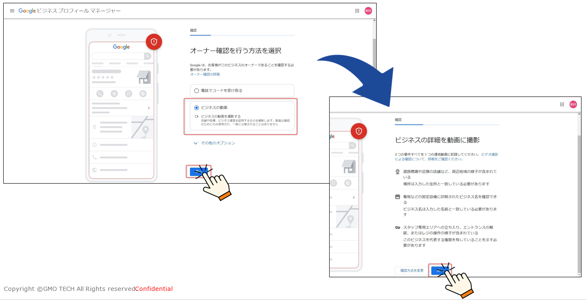
- 画面の案内に沿って、Google側で指定された確認方法を選びます。
参考画面: スマートフォンで確認動画を撮影する流れ
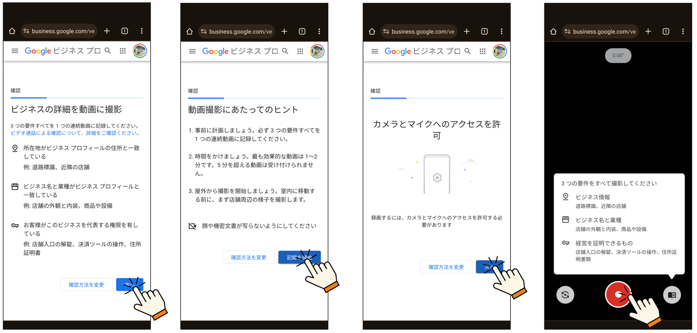
- 録画確認では、店舗の実在性や管理権限が伝わる内容が求められます。
5. 管理者の追加・削除・権限譲渡
管理者を追加すると、その人が店舗情報や投稿、クチコミ返信などの運用に関われるようになります。便利な反面、退職者や外部業者のアカウントが残るとリスクになるため、定期的な確認が必要です。
5-1. 管理者を追加する流れ
1. Googleビジネスプロフィールにログインし、対象店舗を選びます。
2. 右上のメニューから「ビジネスプロフィールの設定」を開きます。
3. 「ユーザーとアクセス権」を選択します。
4. 追加ボタンからメールアドレスを入力し、付与する権限を選びます。
5. 招待を送信し、相手がメールから承認するのを待ちます。
参考画面: ユーザーとアクセス権を開く
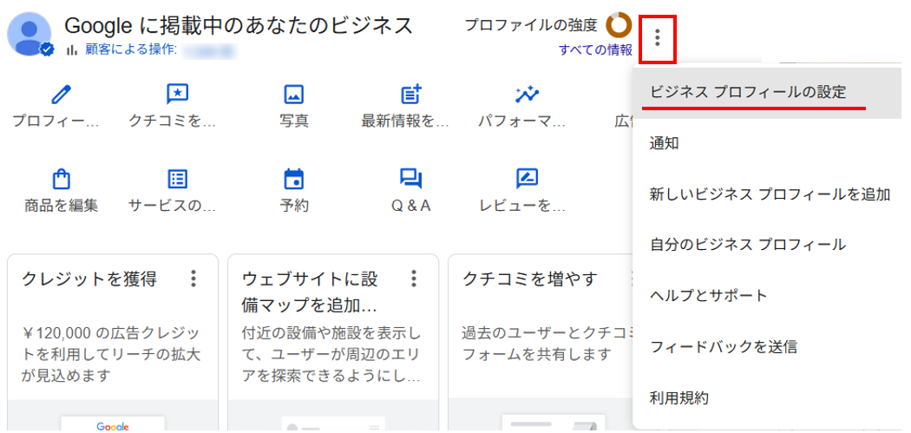
- 管理者追加や権限確認は、このメニューから進みます。
参考画面: 招待するメールアドレスと権限を選ぶ
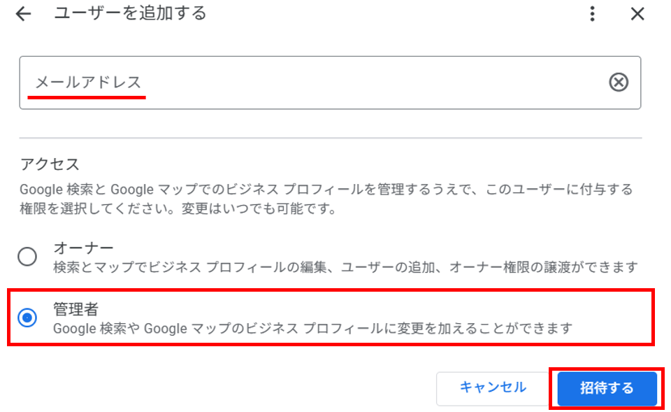
- 誤ったメールアドレスを招待しないよう、送信前に必ず確認します。
5-2. 管理者を削除する流れ
1. 対象店舗の「ビジネスプロフィールの設定」を開きます。
2. 「ユーザーとアクセス権」を開き、削除したいユーザーを選びます。
3. 「ユーザーを削除」を選択します。
4. 削除対象が正しいか確認して完了します。
参考画面: 管理者削除の対象を選ぶ
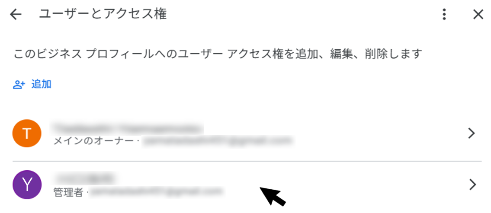
- 退職者、担当外になった人、不明なアカウントが残っていないか確認します。
| 7日間制限 新しく追加されたオーナーや管理者は、Googleの安全対策により一部の重要操作が約7日間制限されることがあります。管理責任者の交代や権限譲渡は、余裕を持って行ってください。 |
|---|
6. ステータス・重複・停止時の対応
Googleビジネスプロフィールには、確認済み、重複、停止、審査中などの状態があります。表示がいつもと違う場合は、まずステータスを確認し、何が原因かを切り分けます。
| 状態 | 意味 | 対応の考え方 |
|---|---|---|
| 確認済み | オーナー確認が完了し、Google上に表示されている状態 | 通常運用できます |
| 審査中・確認中 | 編集内容やオーナー確認をGoogleが確認している状態 | 完了まで追加編集を控えます |
| 重複 | 同じ店舗と見なされるプロフィールが複数ある状態 | 勝手に削除せず、正しい管理先を確認します |
| 停止 | Googleポリシー違反の可能性で表示や管理が制限された状態 | ガイドライン確認後、復旧申請を検討します |
参考画面: ステータス一覧で状態を確認する
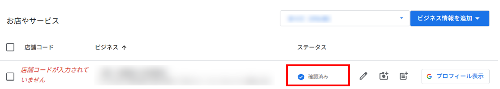
- 確認済み、重複、停止など、今の状態をまず確認します。
6-1. 重複ステータスの対応
- 重複は、同じ住所や同じビジネス情報が複数あるとGoogleが判断した時に出ることがあります。
- 第三者やGoogleの自動生成により、知らないうちに別プロフィールができている場合があります。
- 正しいプロフィールへアクセス権限をリクエストする、またはGoogleへ説明が必要になる場合があります。
- 飲食店側だけで削除や作り直しを進めると、クチコミや検索評価を失う可能性があります。
参考画面: 重複時のアクセス権限リクエスト
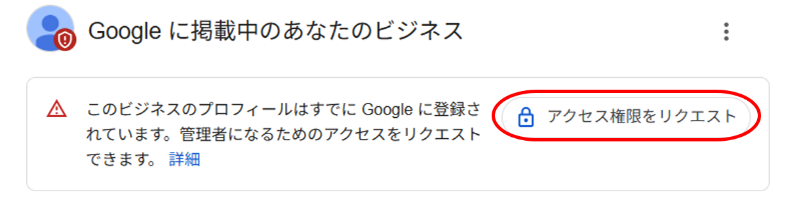
- 既存プロフィールがある場合は、まず正しい管理権限を取れるか確認します。
参考画面: 重複店舗の管理画面
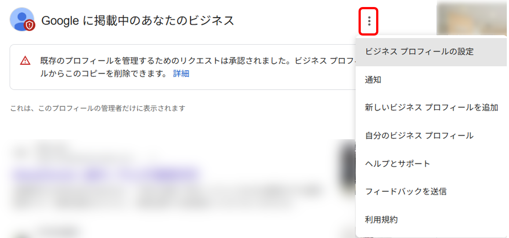
- 重複対応は影響が大きいため、FoodLuck側に確認してから進めます。
6-2. リスティング停止・審査停滞
- リスティング停止は、Googleのポリシーや利用規約違反の疑いで発生します。
- 住所、店舗名、カテゴリ、Webサイト、電話番号など、ガイドラインと実態の差を確認します。
- 再審査請求は一度送ると待ち時間が発生します。焦って何度も編集しないことが大切です。
- 編集後に「確認中」の表示が続く場合も、審査中の追加編集は遅れの原因になります。
7. 心当たりのない権限リクエストへの対応
知らないアカウントからオーナー権限リクエストが届いた場合は、放置しないでください。放置すると、相手がGoogleへオーナー申請を進められる可能性があり、最悪の場合、店舗の管理権限を失うリスクがあります。
1. Googleから届いた権限リクエストメールを確認します。
2. 社内、FoodLuck、既存の関係者からの依頼かを確認します。
3. 心当たりがない場合は、期間内に拒否します。
4. 拒否後、現在のオーナー・管理者一覧に不明なアカウントがないか確認します。
参考画面: オーナー権限リクエストの確認
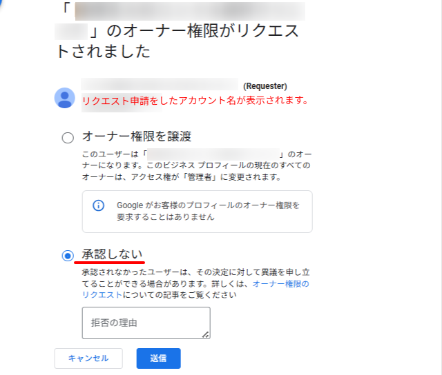
- 知らないアカウントの場合は、必ず拒否し、FoodLuck側にも共有します。
8. Googleへ問い合わせる時
不具合、クチコミ未反映、停止、重複、オーナー確認の停滞などは、Google側へ問い合わせが必要になる場合があります。問い合わせ前に、店舗名、GoogleビジネスプロフィールのURL、発生日時、スクリーンショット、行った操作を整理しておくとスムーズです。
1. Googleビジネスプロフィールを管理しているGoogleアカウントでログインします。
2. 管理画面右上のメニューから「ヘルプとサポート」を開きます。
3. 問い合わせ内容に近い項目を選びます。
4. 必要事項とスクリーンショットを添えて送信します。
5. 返信が来たら、FoodLuck側にも共有します。
参考画面: ヘルプとサポートを開く
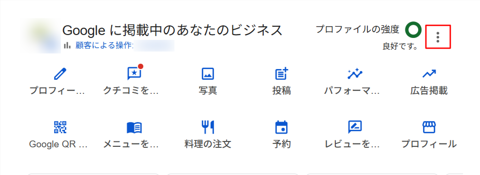
- 管理画面からGoogleへの問い合わせ画面へ進みます。
参考画面: 問い合わせ項目を選ぶ
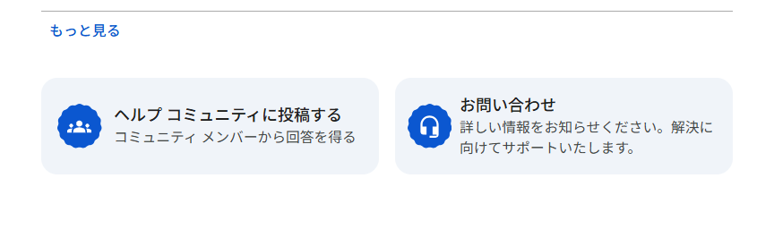
- 問い合わせ内容に合う項目を選び、必要情報を整理して送信します。
9. アカウント安全管理
Googleアカウントを乗っ取られると、店舗情報の改ざん、管理者の追加、プロフィール削除などにつながる可能性があります。店舗のメールアドレスや個人アカウントで管理している場合は、最低限の安全設定を確認します。
□ 2段階認証を有効にする。
□ 復旧用電話番号と予備メールアドレスを登録する。
□ 退職者のGoogleアカウントが管理者に残っていないか確認する。
□ 年齢制限や本人確認でアカウントが無効になった場合は、30日以内に対応する。
□ パスワード共有での運用を避け、必要な人には管理者権限を付与する。
| 削除・作り直しは最終手段 悪いクチコミを消す目的でビジネスプロフィールを削除して作り直すことは、原則おすすめできません。Google側に情報が残る場合があり、検索評価や既存クチコミ、管理状態に悪影響が出る可能性があります。 |
|---|
10. 現場で迷った時の判断表
| 困りごと | まず確認すること | 対応の目安 |
|---|---|---|
| クチコミが表示されない | 反映までの時間、Googleポリシー、投稿状況 | すぐ再投稿を依頼せず様子を見る。必要ならFoodLuckへ相談 |
| 予約ボタンが出ない | 予約サービス、カテゴリ、リンク設定 | 仕様の可能性あり。予約URL自体の表示を確認 |
| 確認中が長い | 直近で店舗名・住所・カテゴリを変更していないか | 追加編集を控え、FoodLuckへ状況共有 |
| ハガキが届かない | 申請日、住所、再発行有無 | 1か月以上なら状況確認。届く前の再発行に注意 |
| 重複と表示される | 同じ店舗の別プロフィールがあるか | 勝手に削除せず、権限リクエストや統合方針を相談 |
| 知らない権限申請 | 申請者が社内・FoodLuck関係者か | 不明なら拒否。放置しない |
| 店舗をGoogleに載せたくない | 実店舗か、サービス提供地域型か | 削除・非表示は影響大。FoodLuck側へ相談 |
11. 反映したFAQ記事一覧
以下のFAQ記事を読み込み、本文の内容を飲食店向けに統合しています。タイトルは確認用として掲載しています。
| No. | 区分 | FAQ記事 |
|---|---|---|
| 1 | その他 | 反映されないクチコミの問い合わせに「Googleクチコミ管理ツール」での再審査 |
| 2 | その他 | Googleビジネスプロフィールにおいて投稿されたクチコミが反映されないケース |
| 3 | その他 | 書いてもらったクチコミをGoogleに削除されないための対策 |
| 4 | その他 | Googleに「違反・スパム」と疑われてしまうクチコミの具体的トリガー |
| 5 | その他 | GoogleビジネスプロフィールについてGoogleへ問い合わせる方法 |
| 6 | その他 | リスティング停止した時の対処方法 |
| 7 | その他 | Googleアカウントが年齢制限で無効になった場合 |
| 8 | その他 | 消えたクチコミの復旧方法 |
| 9 | その他 | 店舗がない場合の Googleビジネスプロフィールを使用方法 |
| 10 | Googleビジネスプロフィールについて | GBPにSNSリンクを設定するメリット |
| 11 | Googleビジネスプロフィールについて | Googleビジネスプロフィールを『店舗ごと』に作成すべき理由と管理方法 |
| 12 | Googleビジネスプロフィールについて | 「オンラインで予約」ボタンが表示されないケース：予約システム・プロバイダの影響 |
| 13 | Googleビジネスプロフィールについて | 「オンラインで予約」ボタンが表示されないケース：カテゴリの影響 |
| 14 | Googleビジネスプロフィールについて | Googleビジネスプロフィールの言語設定 |
| 15 | Googleビジネスプロフィールについて | 同一会社で別事業（別ブランド）を展開している場合のアカウントを複数作成について |
| 16 | Googleビジネスプロフィールについて | Googleビジネスプロフィールに掲載する写真枚数について |
| 17 | Googleビジネスプロフィールについて | Googleビジネスプロフィールのアカウント削除後、復元方法 |
| 18 | Googleビジネスプロフィールについて | Googleビジネスプロフィールアカウントを乗っ取られないためにやっておくべき対策 |
| 19 | Googleビジネスプロフィールについて | Googleビジネスプロフィール申請してから1ヶ月以上ハガキが届かない場合 |
| 20 | Googleビジネスプロフィールについて | Googleビジネスプロフィールの編集を行う際のID・パスワード |
| 21 | Googleビジネスプロフィールについて | Googleビジネスプロフィールの情報欄の、オンレジ色の文字で「確認中」表記について |
| 22 | Googleビジネスプロフィールについて | Googleビジネスプロフィールの編集後の審査が止まっている場合 |
| 23 | Googleビジネスプロフィールについて | Googleビジネスプロフィール内のHP設定について |
| 24 | Googleビジネスプロフィールについて | Googleビジネスプロフィール上から電話番号項目を削除する方法 |
| 25 | Googleビジネスプロフィールについて | Googleマップに店舗情報を載せたくない場合のアカウント削除について |
| 26 | Googleビジネスプロフィールについて | 悪い評価の口コミが入っているビジネスプロフィールを削除し、新しくビジネスプロフィールを作成したい |
| 27 | Googleビジネスプロフィールについて | Googleビジネスプロフィールに投稿した記事が消える |
| 28 | Googleビジネスプロフィールについて | 大型ショッピングセンターの中に入っている店舗にGoogleマップのピンを立てる方法 |
| 29 | Googleビジネスプロフィールについて | Googleビジネスプロフィールに登録している住所と、実際に反映される情報が異なっている場合 |
| 30 | Googleビジネスプロフィールについて | ナレッジ（Googleビジネスプロフィール）に表示されている「所在施設」の変更方法 |
| 31 | Googleビジネスプロフィールについて | Googleビジネスプロフィールから自社の公式サイト・予約サイトに誘導する設定 |
| 32 | Googleビジネスプロフィールについて | Googleビジネスプロフィールへの投稿 ※規定・ルール |
| 33 | Googleビジネスプロフィールについて | Googleビジネスプロフィール上で表示可能な情報 |
| 34 | Googleビジネスプロフィールについて | 開業前にGoogleビジネスプロフィールに登録する方法 |
| 35 | Googleビジネスプロフィールについて | Googleビジネスプロフィールの注意点 |
| 36 | Googleビジネスプロフィールについて | Googleビジネスプロフィールに登録するメリット |
| 37 | Googleビジネスプロフィールについて | Googleビジネスプロフィールでできること |
| 38 | Googleビジネスプロフィールについて | ローカルパックとは |
| 39 | Googleビジネスプロフィールについて | ナレッジパネルとは |
| 40 | Googleビジネスプロフィールについて | Googleビジネスプロフィールとは |
| 41 | Googleビジネスプロフィールについて | Googleビジネスプロフィールの属性で設定したものが外れている |
| 42 | Googleビジネスプロフィールについて | アカウントの種類と権限について |
| 43 | オーナー権限について | オーナー確認が「審査中」のまま進まない場合 |
| 44 | オーナー権限について | Googleビジネスプロフィールにおける権限譲渡後の「7日間制限」について |
| 45 | オーナー権限について | Googleビジネスプロフィールの「重複ステータス」とは |
| 46 | オーナー権限について | GBPにおいて、心当たりのないオーナー権限リクエストが届いた場合 |
| 47 | オーナー権限について | Google管理画面でのステータス確認方法 |
| 48 | オーナー権限について | オーナー権限の取得方法（動画） |
| 49 | オーナー権限について | 知らないアカウントから「オーナー権限リクエスト」がメールで届く理由 |
| 50 | オーナー権限について | Googleビジネスプロフィールの重複ステータスの対応方法 |
| 51 | オーナー権限について | Google ビジネスプロフィールでオーナー権限を譲渡する手順 |
| 52 | オーナー権限について | Googleビジネスプロフィールを管理する「オーナー」の変更方法 |
| 53 | オーナー権限について | Googleビジネスプロフィールで「管理者」を削除する方法 |
| 54 | オーナー権限について | Googleビジネスプロフィールに「管理者」を追加する方法 |
| 55 | オーナー権限について | 電話によるオーナー確認の流れ |
| 56 | オーナー権限について | 社名変更前の宛名でハガキ届いた場合の権限取得について |
| 57 | オーナー権限について | ハガキによるオーナー確認 |
| 58 | オーナー権限について | 無人店舗の場合の、Googleビジネスプロフィールのオーナー確認方法 |
| 59 | オーナー権限について | Googleビジネスプロフィールのオーナー確認方法 |
| 60 | オーナー権限について | Googleビジネスプロフィールの「オーナー」「管理者」の違い |
| 61 | オーナー権限について | オーナー権限を取得しているアカウントを確認する方法 |
| 62 | オーナー権限について | 現在オーナーがいないGBPのオーナー確認方法 |
| 63 | オーナー権限について | 電話・メール・録画でオーナー確認を行う方法 |
| 64 | オーナー権限について | Googleビジネスプロフィールのステータスの種類 |